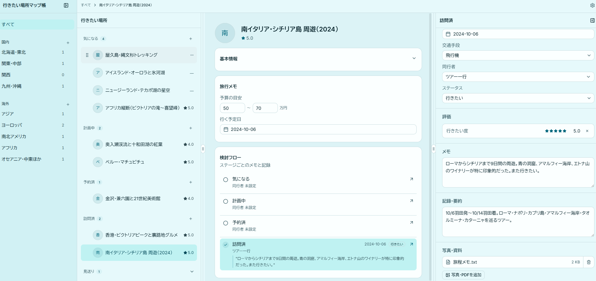

SNS・雑誌・会話でバラバラに溜まっていく「いつか行きたい場所」を1か所に集め、計画から訪問までの進み具合を1画面で追えるツール。
公開アプリを開く ↗旅行の「行きたい場所」を題材にした、4ペインのワークスペースです。

画面は左から右へ進むほど、情報がだんだん細かくなる作りです。
場所はこの4ステージを左から右へ進んでいきます。
行きたい場所はSNSのブックマーク・スクショ・メモにバラバラ。
結局どこに何を保存したか分からず、計画にも進まない。
場所を1か所に集約し、エリアと「行きたい度」で整理。
「気になる→訪問済」の進捗がひと目で分かる。
使うときに知りたいのは、次の3つです。
国内・海外、地域ごとに何件の「行きたい」があるかを把握したい。
どの場所が、いまどの段階（気になる／計画中／予約済／訪問済）かを一覧で確認したい。
アクセス・予算・見どころ・写真・資料といった詳細をまとめて見たい。
3つの視点を 4ペインに割り当てる
すべてをデータベースに入れるのではなく、変わり方で置き場所を分けました。判断基準は「AIとの距離」——安定したものはAIが読めるリポジトリに残す方が後で活きる、という考え方です。
テーブルは places(id, data, sort) の1つだけ。場所を丸ごとJSON（JSONB）で保存し、変更を最小に保ちました。
場所名（と任意のURL）を渡すと、AI（Gemini）がアクセス・予算・見どころ・行きたい理由の下書きを生成。ゼロから書く手間を減らしました。
画像やPDFをアップロードしてサムネ表示・拡大プレビュー。気になる段階のスクショから、予約済のチケットまで場所に紐づけて残せます。
場所はドラッグでステージ間を移動でき、エリアを選べば一覧がその地域だけに絞られる。見送った場所はアーカイブして画面をすっきり保てます。
動くデータはDB、安定したものはリポジトリ。この線引き（＝ハーネスエンジニアリングの第一歩）を、自分の言葉で説明できるようにすることを今月の軸にしました。
保存先をDBに替えた直後、画面を開くたびに保存内容が初期サンプルで上書きされてしまいました。
読み込み完了前に保存処理が走り、初期データで上書きされてしまう
読み込み完了フラグ（hydrated）を立て、完了後のみ保存する制御を追加
公開URLは誰でも閲覧・編集できると気づき、提出用はサンプルデータだけにしました。さらに痛い体験も——
機能を動かすだけなら早くできました。でも「データが消えない」「見せたい人にだけ見せる」を成立させるには、保存のタイミングや公開範囲まで考える必要がありました。失ったデータが、今回の課題の意味そのものを教えてくれました。